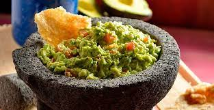

Guacamole

Guacamole is a dip made of avocados, lime, and other fresh ingredients. I like to serve it with tortilla chips or next to my favorite fajitas or tacos
Ingredients
- 2 avocados, peeled and pitted
- 1 cup chopped tomatoes
- 1/4 cup chopped onion
- 1/4 cup chopped cilantro
- 2 tablespoons lemon juice
- 1 jalapeño pepper, seeded and minced (Optional)
- salt and pepper to taste
Steps
- Mash avocados in a bowl until creamy.
- Mix tomatoes, onion, cilantro, lemon juice, and jalapeno pepper into mashed avocado until well combined; season with salt and black pepper.